Change analysis for Nigeria for PRIMAP-hist v2.6.1_final compared to
v2.6_final
Overview over
emissions by sector and gas
The following figures show the aggregate national total emissions
excluding LULUCF AR6GWP100 for the country reported priority scenario.
The dotted linesshow the v2.6_final data.
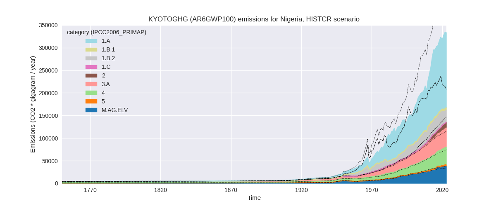
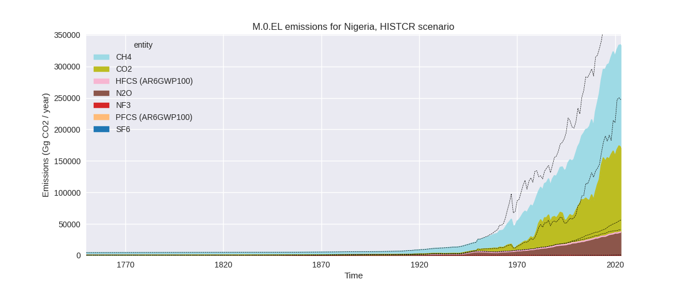
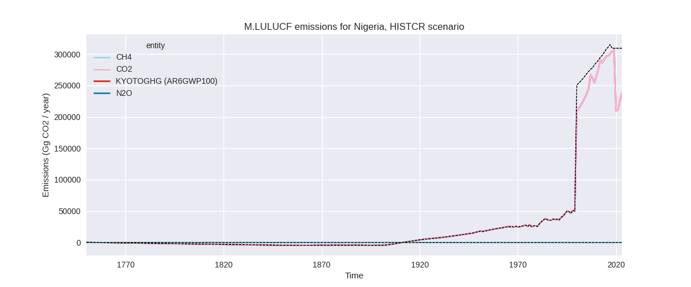
The following figures show the aggregate national total emissions
excluding LULUCF AR6GWP100 for the third party priority scenario. The
dotted linesshow the v2.6_final data.
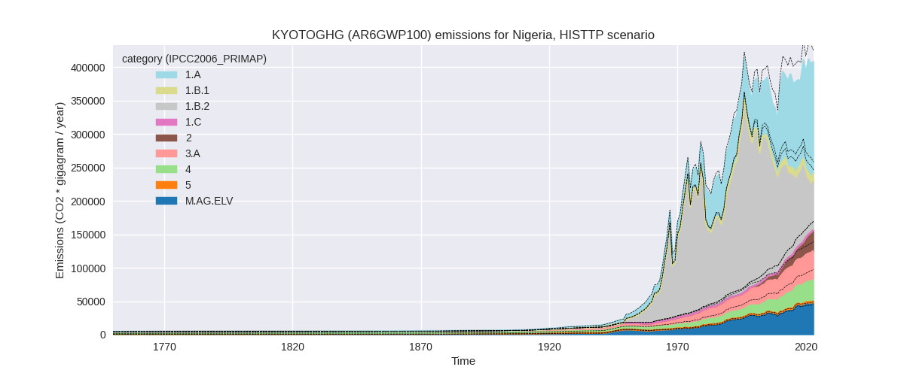
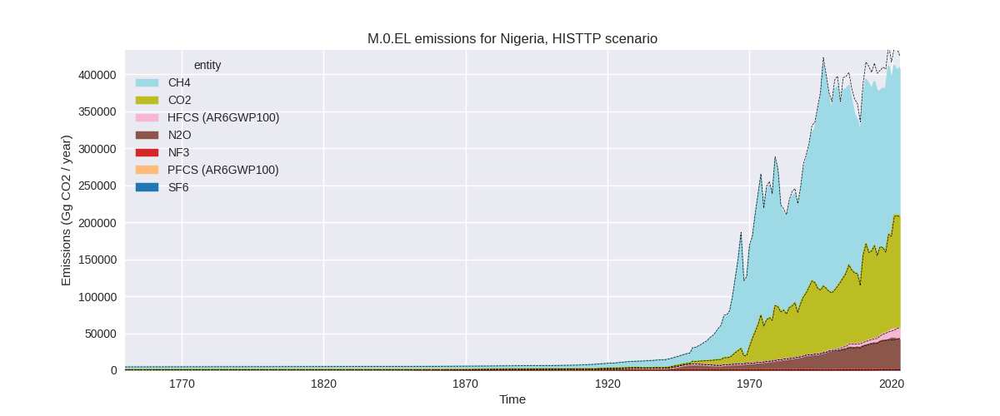
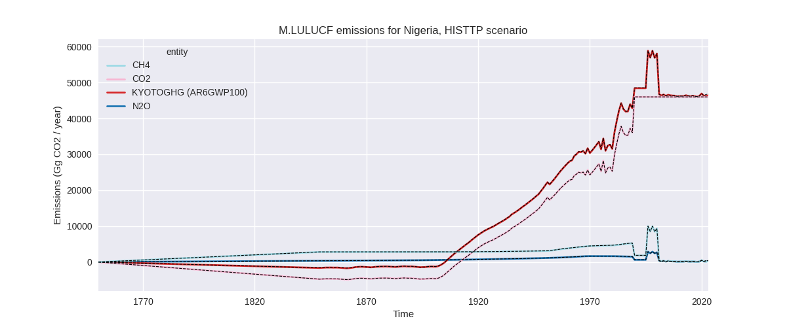
Overview over changes
In the country reported priority scenario we have the following
changes for aggregate Kyoto GHG and national total emissions excluding
LULUCF (M.0.EL):
- Emissions in 2023 have changed by -17.0%% (-68492.90 Gg CO2 / year)
- Emissions in 1990-2023 have changed by -22.7%% (-64566.16 Gg CO2 / year)
In the third party priority scenario we have the following changes
for aggregate Kyoto GHG and national total emissions excluding LULUCF
(M.0.EL):
- Emissions in 2023 have changed by -3.7%% (-15768.81 Gg CO2 / year)
- Emissions in 1990-2023 have changed by -4.8%% (-18593.25 Gg CO2 / year)
Most
important changes per scenario and time frame
In the country reported priority scenario the
following sector-gas combinations have the highest absolute impact on
national total KyotoGHG (AR6GWP100) emissions in 2023
(top 5):
- 1: 1.A, CO2 with -50443.22 Gg CO2 / year (-29.7%)
- 2: 1.B.2, CH4 with -30647.22 Gg CO2 / year (-54.1%)
- 3: 1.A, CH4 with 18972.27 Gg CO2 / year (89.1%)
- 4: 2, HFCS (AR6GWP100) with -15335.94 Gg CO2 / year (-100.0%)
- 5: 4, CH4 with 9333.67 Gg CO2 / year (32.1%)
In the country reported priority scenario the
following sector-gas combinations have the highest absolute impact on
national total KyotoGHG (AR6GWP100) emissions in
1990-2023 (top 5):
- 1: 1.B.2, CH4 with -62819.50 Gg CO2 / year (-73.4%)
- 2: 1.A, CH4 with 9754.64 Gg CO2 / year (51.8%)
- 3: 1.A, CO2 with -8117.03 Gg CO2 / year (-10.1%)
- 4: 4, CH4 with 6286.28 Gg CO2 / year (34.4%)
- 5: 2, HFCS (AR6GWP100) with -4961.30 Gg CO2 / year (-100.0%)
In the third party priority scenario the following
sector-gas combinations have the highest absolute impact on national
total KyotoGHG (AR6GWP100) emissions in 2023 (top
5):
- 1: 4, CH4 with -16723.57 Gg CO2 / year (-36.1%)
- 2: 1.B.2, CH4 with -3854.05 Gg CO2 / year (-5.9%)
- 3: 3.A, CH4 with 1776.41 Gg CO2 / year (4.4%)
- 4: M.AG.ELV, CH4 with 879.37 Gg CO2 / year (5.8%)
- 5: 1.B.1, CH4 with 711.21 Gg CO2 / year (6.1%)
In the third party priority scenario the following
sector-gas combinations have the highest absolute impact on national
total KyotoGHG (AR6GWP100) emissions in 1990-2023 (top
5):
- 1: 4, CH4 with -10763.35 Gg CO2 / year (-38.3%)
- 2: 1.B.2, CH4 with -8593.08 Gg CO2 / year (-6.0%)
- 3: 1.B.1, CH4 with 285.01 Gg CO2 / year (4.3%)
- 4: 1.A, CH4 with 212.06 Gg CO2 / year (0.8%)
- 5: 3.A, CH4 with 138.46 Gg CO2 / year (0.5%)
Notes on data changes
Here we list notes explaining important emissions changes for the
country.
- CRT data from BTR1 covering 2000-2022 has been included. It replaces
and extends data from BUR2. The highest changes come from the energy
sector and waste emissions.
- HFC emissions are now 0 in the CR scenario as they are included in
the country reported data for more than a single year for the first
time.
- The most important changes in the TP scenario are from waste and
fugitive emissions and come directly from the new EDGAR data.
Changes by sector and gas
For each scenario and time frame the changes are displayed for all
individual sectors and all individual gases. In the sector plot we use
aggregate Kyoto GHGs in AR6GWP100. In the gas plot we usenational total
emissions without LULUCF.
country reported scenario
2023
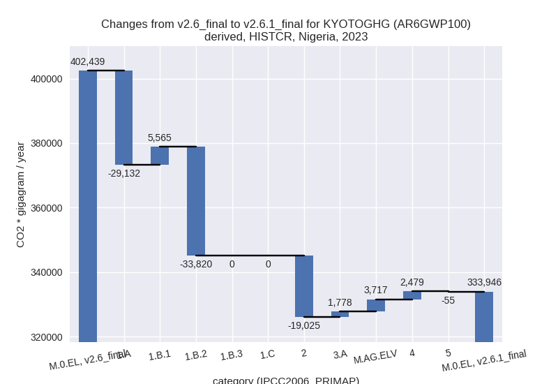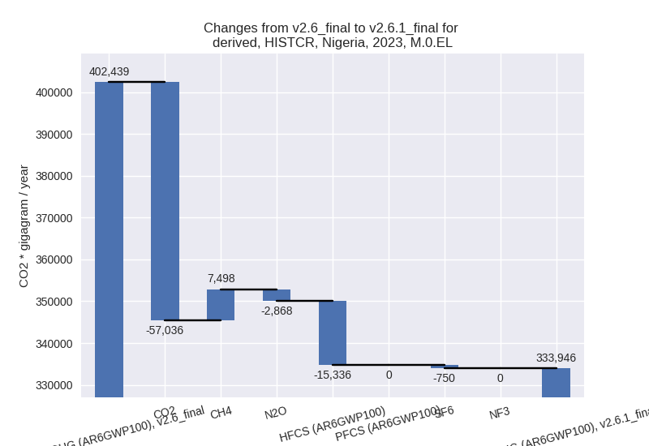
1990-2023
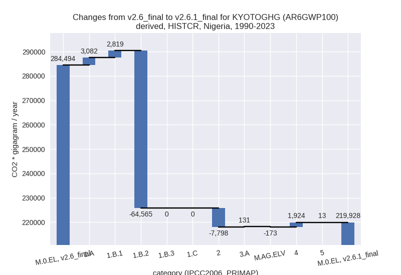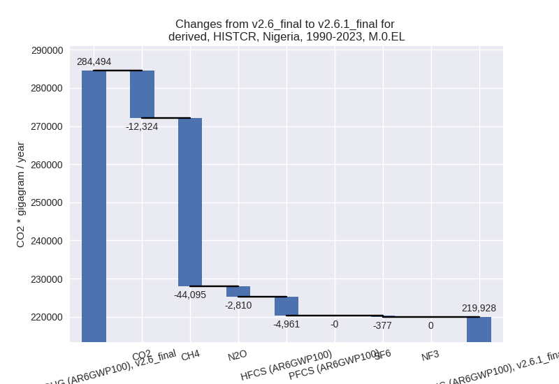
third party scenario
2023
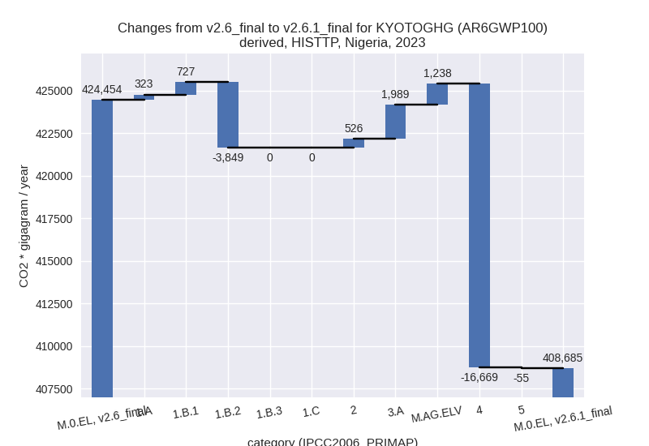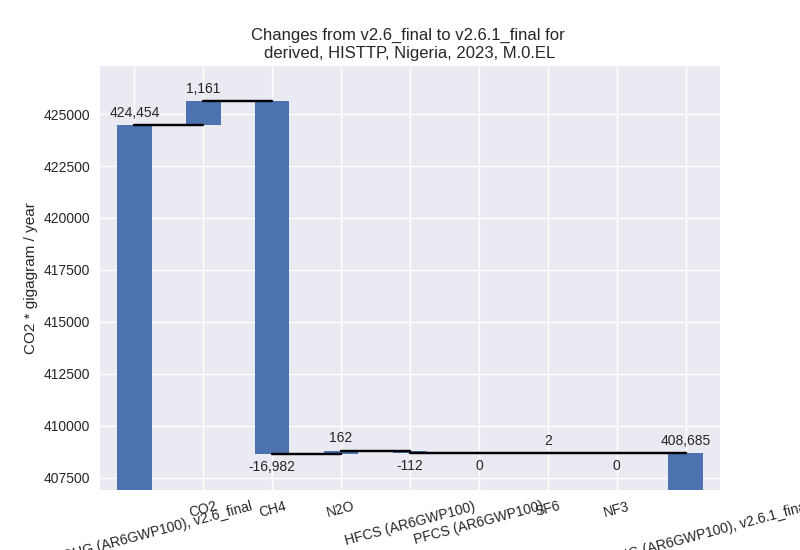
1990-2023
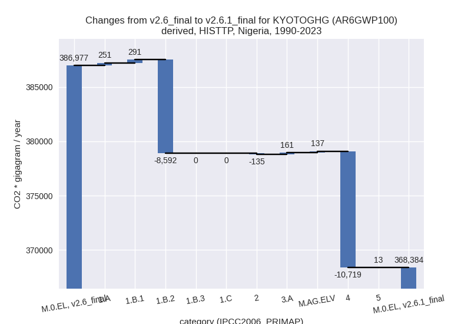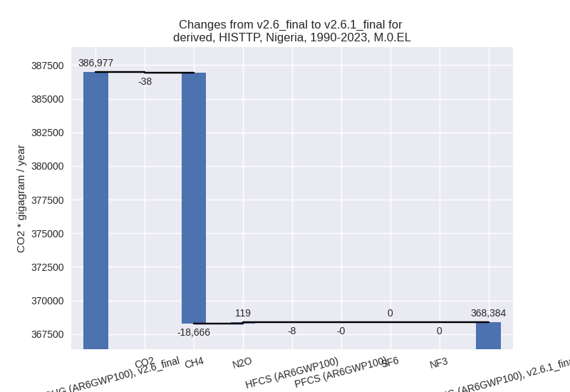
Detailed changes for the
scenarios:
country reported scenario
(HISTCR):
Most important changes
per time frame
For 2023 the following sector-gas combinations have
the highest absolute impact on national total KyotoGHG (AR6GWP100)
emissions in 2023 (top 5):
- 1: 1.A, CO2 with -50443.22 Gg CO2 / year (-29.7%)
- 2: 1.B.2, CH4 with -30647.22 Gg CO2 / year (-54.1%)
- 3: 1.A, CH4 with 18972.27 Gg CO2 / year (89.1%)
- 4: 2, HFCS (AR6GWP100) with -15335.94 Gg CO2 / year (-100.0%)
- 5: 4, CH4 with 9333.67 Gg CO2 / year (32.1%)
For 1990-2023 the following sector-gas combinations
have the highest absolute impact on national total KyotoGHG (AR6GWP100)
emissions in 1990-2023 (top 5):
- 1: 1.B.2, CH4 with -62819.50 Gg CO2 / year (-73.4%)
- 2: 1.A, CH4 with 9754.64 Gg CO2 / year (51.8%)
- 3: 1.A, CO2 with -8117.03 Gg CO2 / year (-10.1%)
- 4: 4, CH4 with 6286.28 Gg CO2 / year (34.4%)
- 5: 2, HFCS (AR6GWP100) with -4961.30 Gg CO2 / year (-100.0%)
Changes in the main sectors for aggregate KyotoGHG (AR6GWP100)
are
- 1: Total sectoral emissions in 2022 are 200351.36
Gg CO2 / year which is 60.1% of M.0.EL emissions. 2023 Emissions have
changed by -22.4% (-57387.18 Gg CO2
/ year). 1990-2023 Emissions have changed by -30.7% (-58663.07 Gg CO2 / year). For 2023
the changes per gas
are:
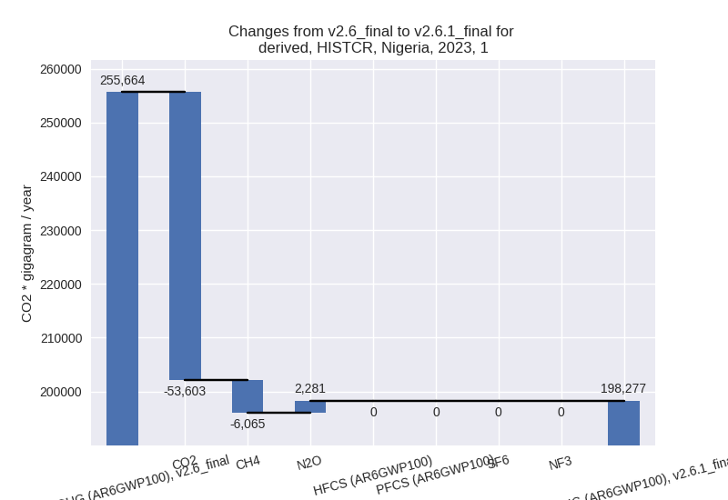
For 1990-2023 the changes per gas
are:
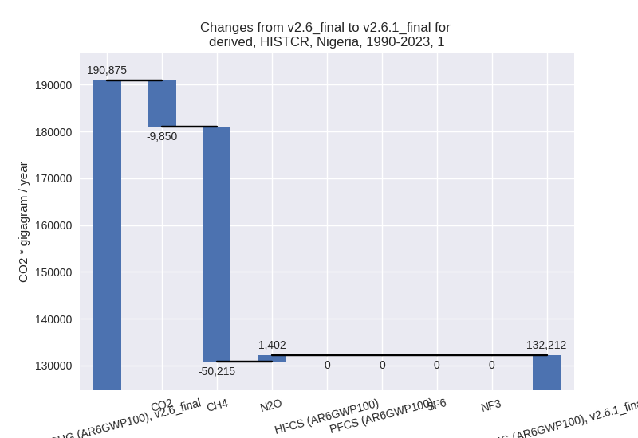
The changes come from the following subsectors:
- 1.A: Total sectoral emissions in 2022 are 169360.19
Gg CO2 / year which is 84.5% of category 1 emissions. 2023 Emissions
have changed by -15.0% (-29131.94 Gg
CO2 / year). 1990-2023 Emissions have changed by 3.0% (3082.43 Gg CO2 / year). For 2023 the
changes per gas
are:
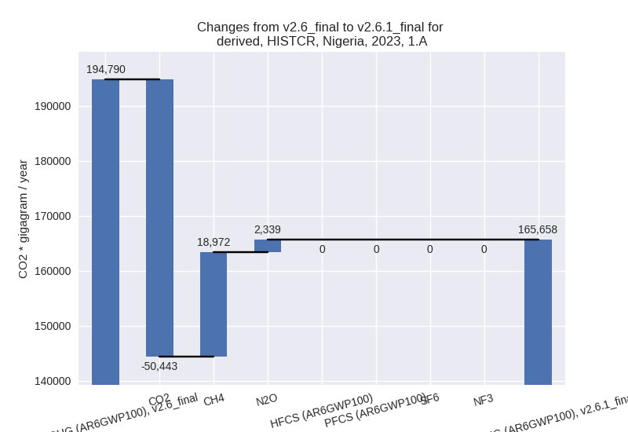
For 1990-2023 the changes per gas
are:
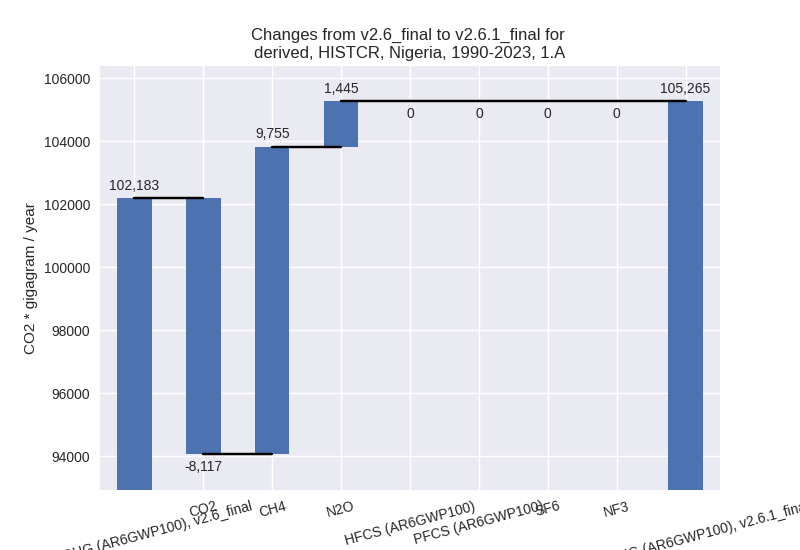
There is no subsector information available in PRIMAP-hist.
- 1.B.1: Total sectoral emissions in 2022 are 5727.55
Gg CO2 / year which is 2.9% of category 1 emissions. 2023 Emissions have
changed by 3120.3% (5564.75 Gg CO2 /
year). 1990-2023 Emissions have changed by 2664.0% (2819.19 Gg CO2 / year). For 2023
the changes per gas
are:
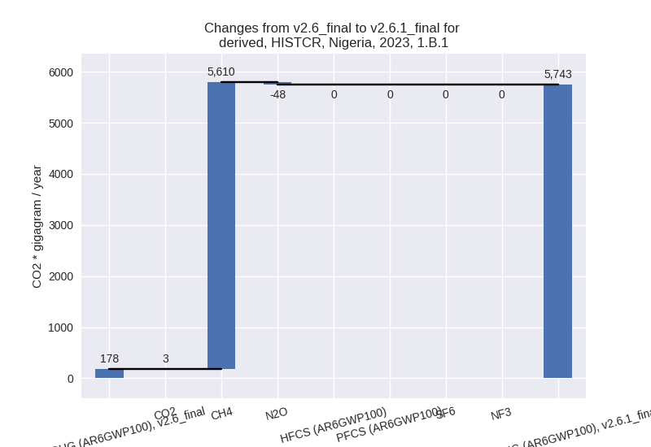
For 1990-2023 the changes per gas
are:
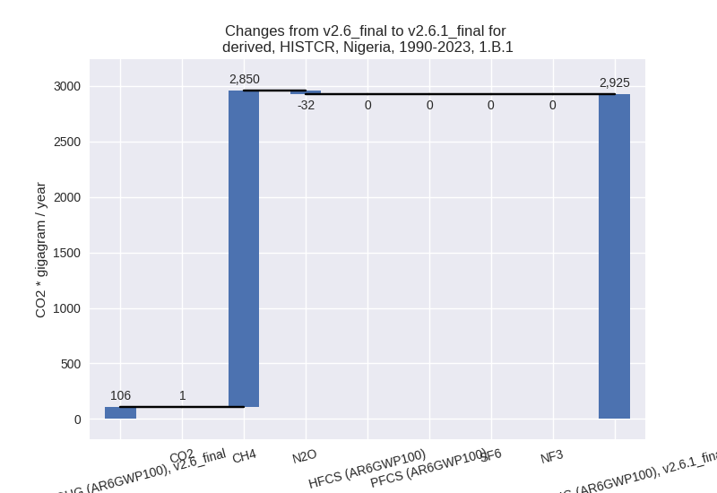
There is no subsector information available in PRIMAP-hist.
- 1.B.2: Total sectoral emissions in 2022 are
25263.62 Gg CO2 / year which is 12.6% of category 1 emissions. 2023
Emissions have changed by -55.7%
(-33819.99 Gg CO2 / year). 1990-2023 Emissions have changed by -72.9% (-64564.69 Gg CO2 / year). For 2023
the changes per gas
are:
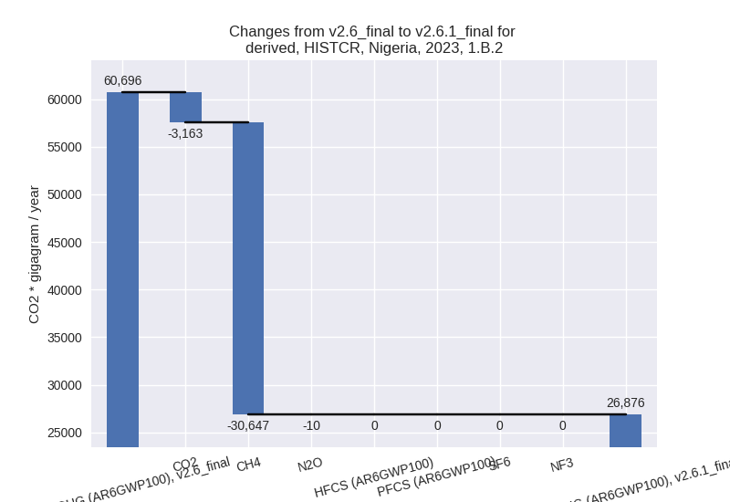
For 1990-2023 the changes per gas
are:
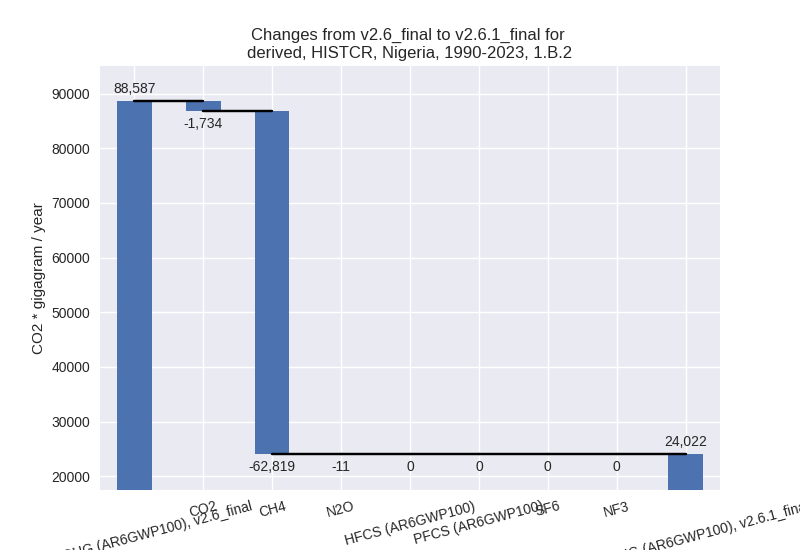
There is no subsector information available in PRIMAP-hist.
- 2: Total sectoral emissions in 2022 are 12587.74 Gg
CO2 / year which is 3.8% of M.0.EL emissions. 2023 Emissions have
changed by -60.2% (-19024.72 Gg CO2
/ year). 1990-2023 Emissions have changed by -59.7% (-7798.05 Gg CO2 / year). For 2023
the changes per gas
are:
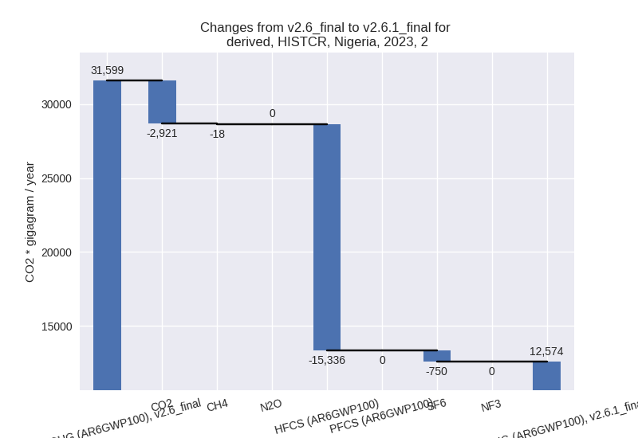
For 1990-2023 the changes per gas
are:
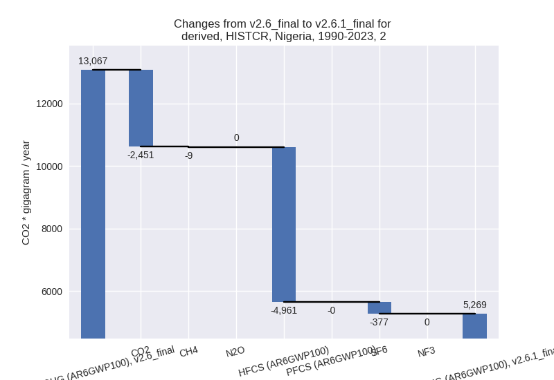
- M.AG: Total sectoral emissions in 2022 are 78552.57
Gg CO2 / year which is 23.6% of M.0.EL emissions. 2023 Emissions have
changed by 7.4% (5494.68 Gg CO2 /
year). 1990-2023 Emissions have changed by -0.1% (-42.05 Gg CO2 / year). For 2023 the
changes per gas
are:
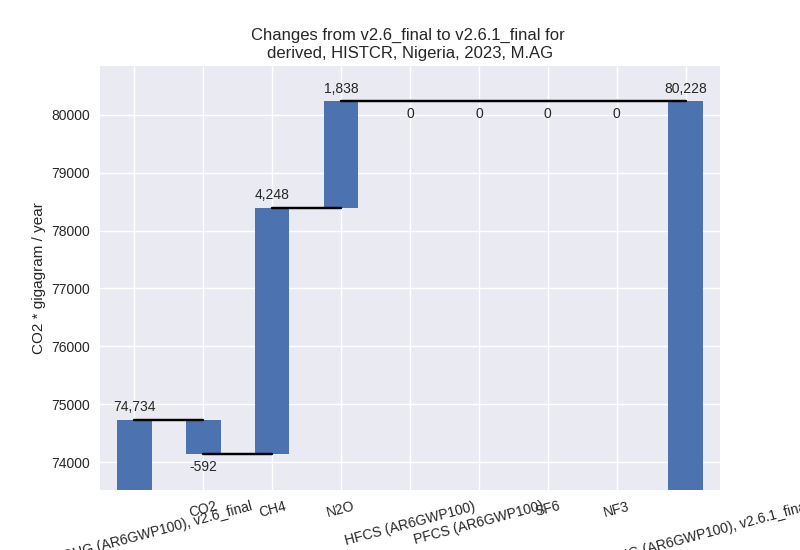
The changes come from the following subsectors:
- 3.A: Total sectoral emissions in 2022 are 41701.42
Gg CO2 / year which is 53.1% of category M.AG emissions. 2023 Emissions
have changed by 4.4% (1777.56 Gg CO2
/ year). 1990-2023 Emissions have changed by 0.4% (130.73 Gg CO2 / year). For 2023 the
changes per gas
are:
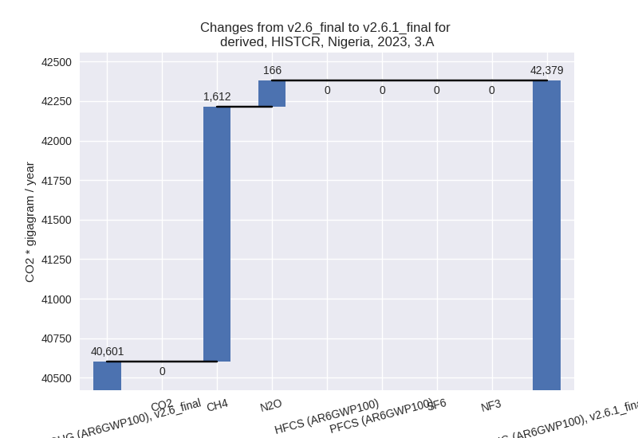
There is no subsector information available in PRIMAP-hist.
- M.AG.ELV: Total sectoral emissions in 2022 are
36851.15 Gg CO2 / year which is 46.9% of category M.AG emissions. 2023
Emissions have changed by 10.9%
(3717.13 Gg CO2 / year). 1990-2023 Emissions have changed by -0.7% (-172.78 Gg CO2 / year). For 2023
the changes per gas
are:
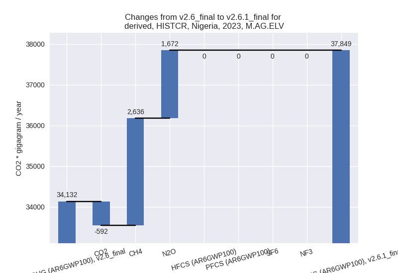
There is no subsector information available in PRIMAP-hist.
- 4: Total sectoral emissions in 2022 are 37925.08 Gg
CO2 / year which is 11.4% of M.0.EL emissions. 2023 Emissions have
changed by 6.8% (2478.92 Gg CO2 /
year). 1990-2023 Emissions have changed by 8.4% (1924.30 Gg CO2 / year). For 2023 the
changes per gas
are:
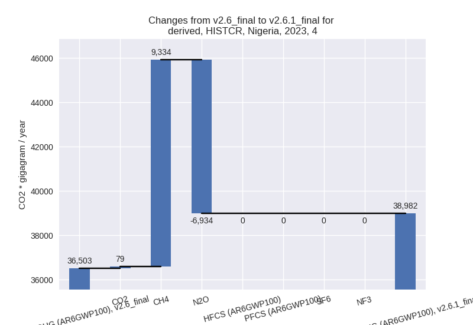
For 1990-2023 the changes per gas
are:
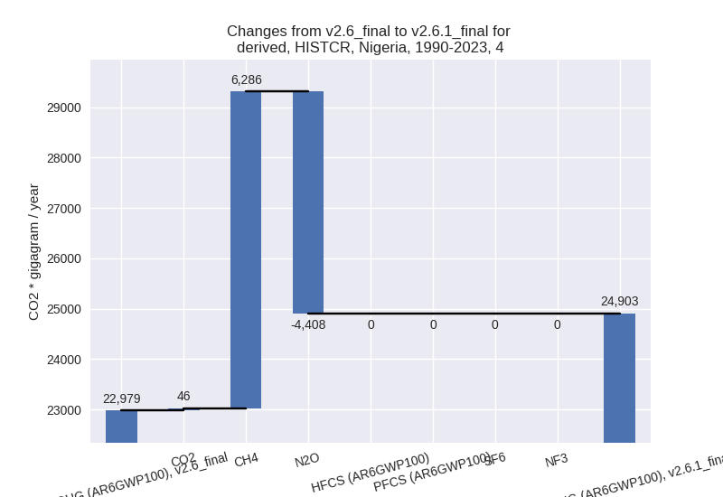
- 5: Total sectoral emissions in 2022 are 3978.98 Gg
CO2 / year which is 1.2% of M.0.EL emissions. 2023 Emissions have
changed by -1.4% (-54.60 Gg CO2 /
year). 1990-2023 Emissions have changed by 0.5% (12.70 Gg CO2 / year).
third party scenario (HISTTP):
Most important changes
per time frame
For 2023 the following sector-gas combinations have
the highest absolute impact on national total KyotoGHG (AR6GWP100)
emissions in 2023 (top 5):
- 1: 4, CH4 with -16723.57 Gg CO2 / year (-36.1%)
- 2: 1.B.2, CH4 with -3854.05 Gg CO2 / year (-5.9%)
- 3: 3.A, CH4 with 1776.41 Gg CO2 / year (4.4%)
- 4: M.AG.ELV, CH4 with 879.37 Gg CO2 / year (5.8%)
- 5: 1.B.1, CH4 with 711.21 Gg CO2 / year (6.1%)
For 1990-2023 the following sector-gas combinations
have the highest absolute impact on national total KyotoGHG (AR6GWP100)
emissions in 1990-2023 (top 5):
- 1: 4, CH4 with -10763.35 Gg CO2 / year (-38.3%)
- 2: 1.B.2, CH4 with -8593.08 Gg CO2 / year (-6.0%)
- 3: 1.B.1, CH4 with 285.01 Gg CO2 / year (4.3%)
- 4: 1.A, CH4 with 212.06 Gg CO2 / year (0.8%)
- 5: 3.A, CH4 with 138.46 Gg CO2 / year (0.5%)
Changes in the main sectors for aggregate KyotoGHG (AR6GWP100)
are
- 1: Total sectoral emissions in 2022 are 251413.50
Gg CO2 / year which is 62.2% of M.0.EL emissions. 2023 Emissions have
changed by -1.1% (-2798.29 Gg CO2 /
year). 1990-2023 Emissions have changed by -2.9% (-8049.72 Gg CO2 / year). For
1990-2023 the changes per gas
are:
The changes come from the following subsectors:
- 1.A: Total sectoral emissions in 2022 are 170693.07
Gg CO2 / year which is 67.9% of category 1 emissions. 2023 Emissions
have changed by 0.2% (323.19 Gg CO2
/ year). 1990-2023 Emissions have changed by 0.3% (251.31 Gg CO2 / year).
- 1.B.1: Total sectoral emissions in 2022 are
12556.82 Gg CO2 / year which is 5.0% of category 1 emissions. 2023
Emissions have changed by 6.1%
(727.12 Gg CO2 / year). 1990-2023 Emissions have changed by 4.4% (290.83 Gg CO2 / year). For 2023 the
changes per gas
are:
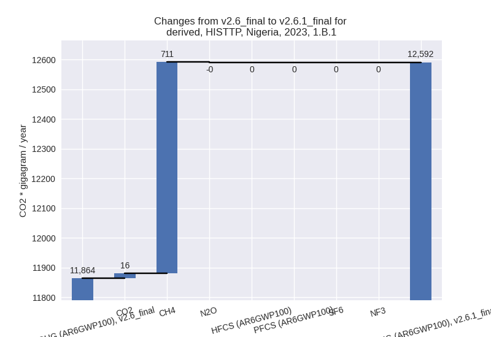
For 1990-2023 the changes per gas
are:
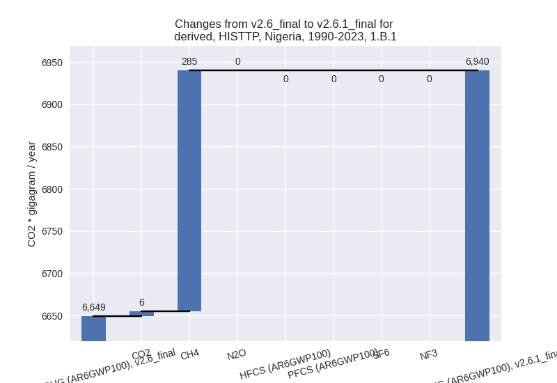
There is no subsector information available in PRIMAP-hist.
- 1.B.2: Total sectoral emissions in 2022 are
68163.61 Gg CO2 / year which is 27.1% of category 1 emissions. 2023
Emissions have changed by -5.0%
(-3848.60 Gg CO2 / year). 1990-2023 Emissions have changed by -4.9% (-8591.86 Gg CO2 / year). For 2023
the changes per gas
are:
For 1990-2023 the changes per gas
are:
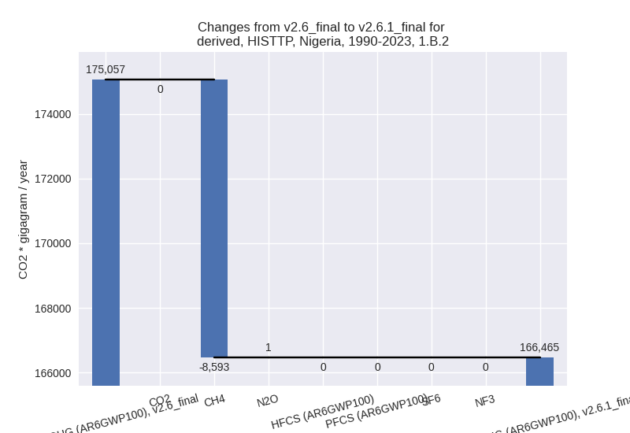
There is no subsector information available in PRIMAP-hist.
- 2: Total sectoral emissions in 2022 are 30007.21 Gg
CO2 / year which is 7.4% of M.0.EL emissions. 2023 Emissions have
changed by 1.7% (526.15 Gg CO2 /
year). 1990-2023 Emissions have changed by -1.2% (-135.24 Gg CO2 / year).
- M.AG: Total sectoral emissions in 2022 are 87531.41
Gg CO2 / year which is 21.7% of M.0.EL emissions. 2023 Emissions have
changed by 3.7% (3227.09 Gg CO2 /
year). 1990-2023 Emissions have changed by 0.5% (298.04 Gg CO2 / year). For 2023 the
changes per gas
are:
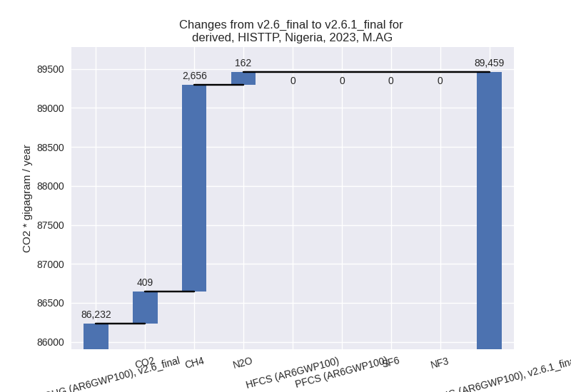
The changes come from the following subsectors:
- 3.A: Total sectoral emissions in 2022 are 42620.80
Gg CO2 / year which is 48.7% of category M.AG emissions. 2023 Emissions
have changed by 4.8% (1989.16 Gg CO2
/ year). 1990-2023 Emissions have changed by 0.5% (160.62 Gg CO2 / year). For 2023 the
changes per gas
are:
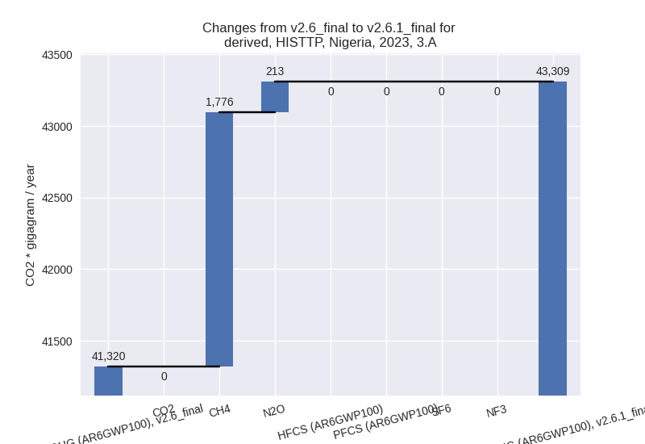
There is no subsector information available in PRIMAP-hist.
- M.AG.ELV: Total sectoral emissions in 2022 are
44910.61 Gg CO2 / year which is 51.3% of category M.AG emissions. 2023
Emissions have changed by 2.8%
(1237.93 Gg CO2 / year). 1990-2023 Emissions have changed by 0.4% (137.42 Gg CO2 / year). For 2023 the
changes per gas
are:
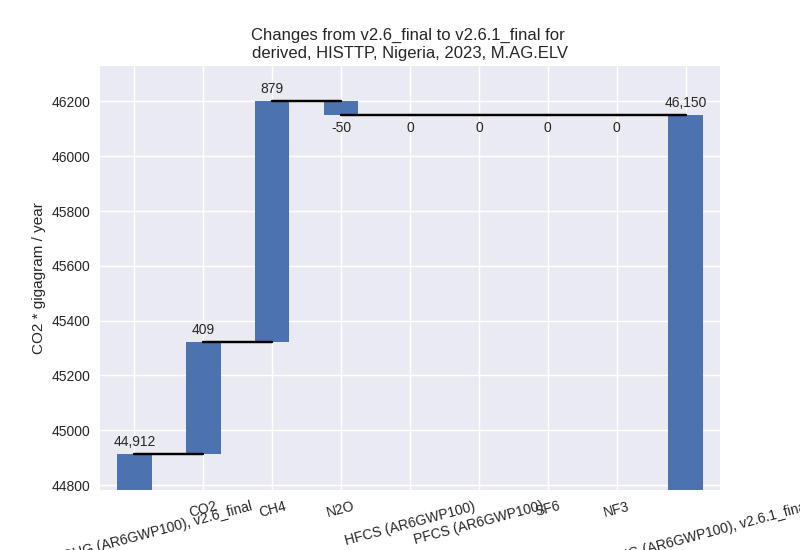
There is no subsector information available in PRIMAP-hist.
- 4: Total sectoral emissions in 2022 are 31240.87 Gg
CO2 / year which is 7.7% of M.0.EL emissions. 2023 Emissions have
changed by -34.2% (-16669.16 Gg CO2
/ year). 1990-2023 Emissions have changed by -36.0% (-10719.03 Gg CO2 / year). For 2023
the changes per gas
are:
For 1990-2023 the changes per gas
are:
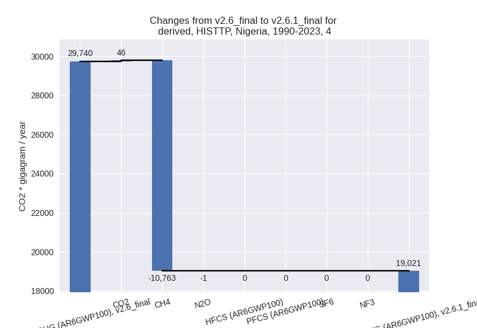
- 5: Total sectoral emissions in 2022 are 3978.98 Gg
CO2 / year which is 1.0% of M.0.EL emissions. 2023 Emissions have
changed by -1.4% (-54.60 Gg CO2 /
year). 1990-2023 Emissions have changed by 0.5% (12.70 Gg CO2 / year).